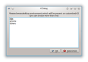

Ubuntu Customization Kit
Dieser Artikel wurde für die folgenden Ubuntu-Versionen getestet:
Ubuntu 14.04 Trusty Tahr
Zum Verständnis dieses Artikels sind folgende Seiten hilfreich:
Das Ubuntu Customization Kit (UCK) ist ein Werkzeug, das beim Erstellen eigener Ubuntu, Kubuntu, Xubuntu oder Edubuntu CDs/DVDs behilflich ist. Mit der grafischen Oberfläche des Programms lassen sich die Spracheinstellungen des Installationsmediums, sowohl für das Live-System als auch für den Startvorgang, anpassen.
Zusätzlich ist es möglich, Pakete hinzuzufügen und Einstellungen zu ändern, die dann im Live-System sofort zur Verfügung stehen. Dazu stehen ein grafischer Paketmanager und ein Terminal zur Verfügung, worüber im Live-System installierte Programme aufgerufen werden können. Mit der aktuellen Version kann auch eine Alternate-CD angepasst werden, während anfangs nur Desktop-CDs genutzt werden konnten.
Große Live-Systeme lassen sich auch auf DVD unterbringen, die Bearbeitung der (X-/K-/Ed-)Ubuntu-DVD Edition selbst ist allerdings noch nicht möglich. Mit der grafischen Oberfläche uck-gui kann jedoch nur die Desktop-CD bearbeitet werden. Für die Anpassung der Alternate-CD müssen die Remaster-Skripte verwendet werden, was in dieser Anleitung nicht beschrieben ist.
Installation¶
UCK ist in den offiziellen Paketquellen enthalten. Zur Installation benötigt man folgendes Paket[1]:
uck (universe)
 mit apturl
mit apturl
Paketliste zum Kopieren:
sudo apt-get install uck
sudo aptitude install uck
Vorbereitungen¶
Hinweis:
Das Zusammenstellen der Live-CD/DVD benötigt mitunter viel Speicherplatz. Da sowohl die entpackte Live-CD als auch die später erzeugte ISO-Datei zusätzlich zu den hinzugefügten Paketen (siehe Paketauswahl) in /home/BENUTZERNAME/tmp/remaster-root/ abgelegt werden müssen, sollten mind. 4-5 GiB zur Verfügung stehen.
Entwickler-Quelle¶
Um den Startbildschirm des Installationsmediums auf eine beliebige Sprache umstellen zu können, muss in der eigenen sources.list die Zeile für die Entwicklerpakete der Hauptkomponente der jeweiligen Ubuntu-Versions-Quelle freigeschaltet sein [1]. Bei Ubuntu 14.04 Trusty ist dies beispielsweise:
deb-src http://de.archive.ubuntu.com/ubuntu trusty main
CD-Image¶
Es wird eine ISO-Datei einer Desktop- oder Alternate-CD benötigt, die – wie im Artikel Downloads beschrieben – der Rechner-Architektur entsprechen muss (z.B. ubuntu-14.04-desktop-i386.iso). Alternativ kann man auch das inoffizielle Ubuntu Mini Remix  verwenden.
verwenden.
Benutzung¶
UCK kann per Dash bzw. bei Ubuntu-Varianten mit einem Anwendungsmenü über den Menü-Eintrag "Anwendungen -> Systemwerkzeuge -> Ubuntu Customization Kit" gestartet werden.[2] Der Befehl im Terminal lautet uck-gui. Es öffnen sich ein Terminal und ein Fenster, in dem alle weiteren Schritte (in Englisch) erklärt werden.
Hinweis:
Wurde bereits eine ISO-Datei erzeugt, so wird diese mit allen Ordnern und darin enthaltenen Dateien automatisch und ohne Nachfrage überschrieben!
Sprache¶
Zuerst werden die Sprachpakete ausgewählt, die später auf dem Desktop zur Verfügung stehen sollen, anschließend die Pakete, die schon während des Startvorgangs bereitstehen sollen (z.B. "de" für Deutsch und "en" für Englisch).
| Sprachpakete wählen |
| Verfügbare Sprachen für Live-CD |
| Standardsprache beim Start der Live-CD |
Desktop¶
 Nun kann gewählt werden, ob eine typische Unity-, GNOME- oder KDE-Umgebung gewünscht ist oder anhand eines anderen ISO-Image der Vorgang fortgesetzt werden soll. Xfce- und LXDE-Nutzer wählen hier "Others".
CD-/DVD-Erstellung¶
Nun kann die ISO-Datei, auf deren Basis die persönliche Anpassung vorgenommen werden soll, gewählt werden und man kann einen maximal 32 Buchstaben langen Namen für die neue CD/DVD eingeben, beispielsweise mein-desktop-i386-DATUM.iso.
Anschließend wählt man zwischen manueller oder automatischer Fortsetzung der Prozedur.
Manuell ("yes"): Pakete können hinzugefügt oder entfernt und eine chroot-Umgebung genutzt werden
Automatisch ("no"): Die Standardpakete der zuvor gewählten Live-CD werden installiert
win32¶
Unabhängig von manueller oder automatischer Einstellung können alle auf Windows bezogenen Dateien automatisch gelöscht werden. Wählt man "yes", wird der Autostart unter Windows inklusive aller Dateien der Programme, die installiert werden können, nicht mit in das neue Live-System übernommen (siehe auch "Unter Microsoft Windows" im Artikel Live-CD).
Paketauswahl¶
Wurde manuelles Erstellen der Live-CD ausgewählt, dann gibt es die Möglichkeit, mit "Run console application" ein Terminal[3] in einer chroot-Umgebung des Live-Systems zu öffnen. Dort kann man zusätzliche Programmpakete installieren[4] oder vorhandene deinstallieren. Es ist möglich, als erstes eine grafische Paketverwaltung wie Synaptic zu installieren. Dazu aktiviert[1] man die Paketquelle universe und, falls für andere Programme noch benötigt, auch multiverse und aktualisiert die Paketquellen:
add-apt-repository universe add-apt-repository multiverse apt-get update
Danach kann man Programme wie Synaptic installieren[4] und aufrufen[2]:
apt-get install synaptic synaptic
Nach der Installation der benötigten Software kann man Synaptic schließen, um im Terminal eventuell mit weiteren Änderungen fortzusetzen. Darüber können alle weiteren Programme gestartet werden, beispielsweise um Konfigurationsdateien zu bearbeiten oder Benutzer und Gruppen anzulegen[5].
Möchte man Pakete installieren, die sich nicht in den Quellen befinden, können entsprechende .deb-Dateien[6] in ein Unterverzeichnis von ~/tmp/remaster-root/ kopiert werden. Sie stehen dann in der chroot-Umgebung zur Verfügung. Natürlich können auch andere Daten, wie Bilder, Texte usw. auf diese Weise hinzugefügt werden. Dabei sollte nichts im ~/tmp/remaster-root/home/-Ordner abgelegt werden, da dieses Verzeichnis später überschrieben wird. Ein geeigneter Ort ist zum Beispiel /opt.
Je nach gewähltem Installationsumfang wird das Image unter Umständen zu groß (>700MB) für eine CD. In solch einem Fall lassen sich mit UCK auch bootfähige DVDs erstellen, mit denen sich das System wie gewohnt installieren lässt. Vor dem Brennvorgang ist einfach ein der Installationsgröße entsprechendes Medium einzulegen.
Experten-Info:
Um unkompliziert die Paketkonfiguration des installierten Systems auf das neue Live-System zu übertragen, legt man in Synaptic (auf dem eigentlichen System) per "Datei\Vorgemerkte Änderungen speichern unter..." eine Datei mit der aktuellen Paketmarkierung an. Diese Datei verschiebt man dann in das ~/tmp/remaster-root-Verzeichnis der UCK Installation.
In der virtuellen Synaptic Instanz kann dann bequem der Stand des eigentlichen Systems importiert werden. Die zu installierenden Pakete werden dann vom virtuellen (UCK-)Synaptic erneut heruntergeladen. Einfacher ist es, die benötigten Pakete vor dem Import im virtuellen (UCK-)Synaptic aus einem bestehenden Verzeichnis in ~/tmp/remaster-root/var/cache/apt/archives/ zu kopieren. Der Import gilt natürlich nur für die Pakete. Alle Einstellungen in /home/BENUTZERNAME/ und andere Veränderungen (z.B. an den Dateien der Systemkonfiguration) müssen separat gesichert werden.
Benutzereinstellungen¶
Auf der Live-CD gibt es natürlich keinen Benutzer im eigentlichen Sinne. Also werden Änderungen an /home/* grundsätzlich ignoriert. Dennoch existiert der Benutzer ubuntu, und der hat auch ein /home/ubuntu/ auf der Live-CD. Wenn man nun Änderungen an dieser vordefinierten Umgebung vornehmen will, sollte man dies in dem Verzeichnis tun, welches als Grundlage für jeden neuen Nutzer dient. In /etc/skel/ wird ein solches "skeleton" - also Skelett - angelegt. Wenn man z.B. einen Programm-Starter als Desktop-Icon nach einem Live-Start zur Verfügung stellen will, erstellt man das Verzeichnis /etc/skel/Desktop/. Dort erstellt man dann einen Link auf das eigentliche Programm und schon liegt ein zusätzliches Icon auf dem Standard-Desktop, mit dem man dieses Programm starten kann.
Auf diese Weise könnte man auch eine Arbeitsumgebung sichern oder klonen: man erstellt einen Benutzer und generiert dort alle Einstellungen, die später als Standard dienen sollen. Anschließend wird dieses Homeverzeichnis nach /etc/skel/ kopiert und das Image ist fertig. Damit können z.B. 100 Arbeitsplätze einer Firma mit einem "Standard-Ubuntu" ausgerüstet werden, bei dem der Support genau weiß, wie es eingerichtet ist.
Fertigstellung¶
Mit dem Befehl exit verlässt man die Konsole wieder. Wenn man danach "Continue building" wählt, beginnt die Erstellung des neuen ISO-Abbildes. Von jetzt an wird der Prozessor des Rechners belastet und die ISO-Datei erzeugt. Den aktuellen Status kann man im Terminal verfolgen.
Ist alles erfolgreich abgeschlossen, wird der Ordner ~/tmp/remaster-new-files angegeben, der die ISO-Datei enthält. Diese sollte umgehend an einen sicheren Ort kopiert oder mit Root-Rechten verschoben werden, da der nächste Start von UCK den Ordner mit der ISO-Datei ungefragt überschreibt.
Um CD-/DVD-Rohlinge zu sparen, bietet es sich an, die ISO-Datei zunächst in einer virtualisierten Umgebung zu testen, beispielsweise mit QEMU oder VirtualBox.
Die fertige ISO-Datei kann mit einem Brennprogramm auf ein leeres Medium gebrannt werden oder man benutzt einen USB-Stick, um die angepasste Ubuntu Version zu starten.
- Erstellt mit Inyoka
-
 2004 – 2017 ubuntuusers.de • Einige Rechte vorbehalten
2004 – 2017 ubuntuusers.de • Einige Rechte vorbehalten
Lizenz • Kontakt • Datenschutz • Impressum • Serverstatus -
Serverhousing gespendet von